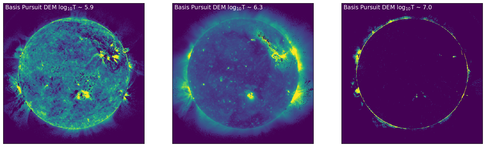
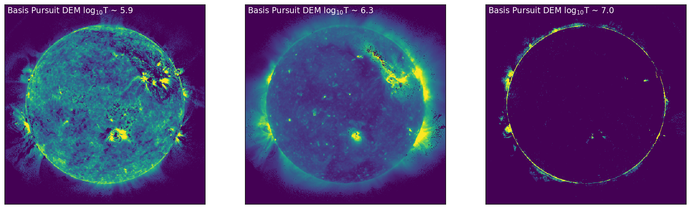
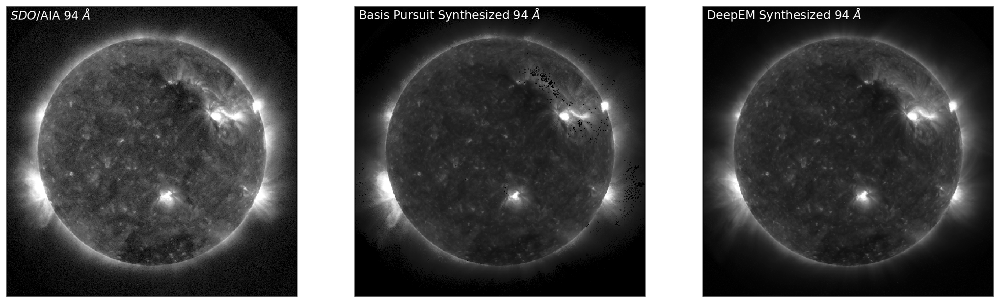
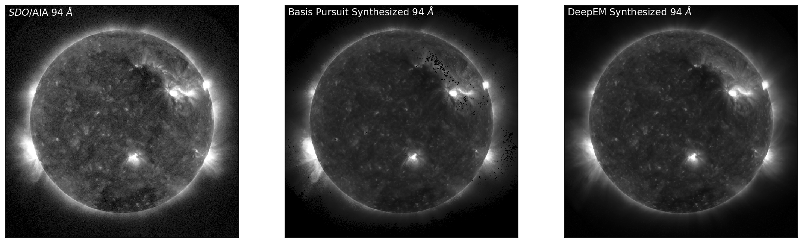
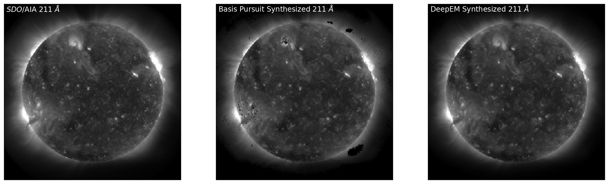
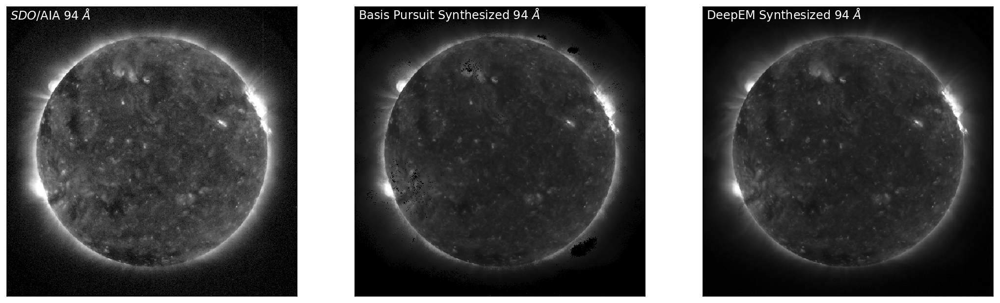
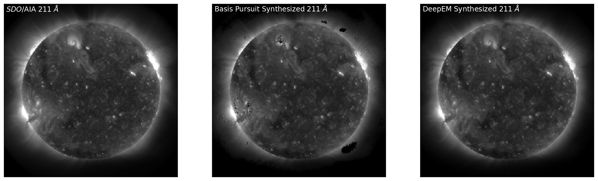
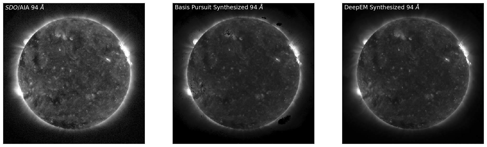

Notebook¶
by Paul Wright\(^{1}\), Mark Cheung\(^{2,3}\), Rajat Thomas\(^{4}\), Richard Galvez\(^{5}\), Alexandre Szenicer\(^{6}\), Meng Jin\(^{2,7}\), Andrés Muñoz-Jaramillo\(^{8}\), and David Fouhey\(^{9}\)
\(^{1}\)University of Glasgow, email: paul@pauljwright.co.uk; \(^{2}\)Lockheed Martin Solar and Astrophysics Laboratory; \(^{3}\)Stanford University; \(^{4}\)University of Amsterdam; \(^{5}\)New York University; \(^{6}\)University of Oxford; \(^{7}\)SETI Institute; \(^{8}\)SouthWest Research Institute; \(^{9}\)University of California, Berkeley
Introduction¶
The intensity observed through optically-thin SDO/AIA filters (94 Å, 131 Å, 171 Å, 193 Å, 211 Å, 335 Å) can be related to the temperature distribution of the solar corona (the differential emission measure; DEM) as
In this equation, \(g_{i}\) is the DN s\(^{-1}\) px\(^{-1}\) value in the \(i\)th SDO/AIA channel. This intensity corresponds to the \(K_{i}(T)\) temperature response function, and the DEM, \(\xi(T)\), is in units of cm\(^{-5}\) K\(^{-1}\). The matrix formulation of this integral equation can be represented in the form \(\vec{g} = {\bf K}\vec{\xi}\), however this problem is an ill-posed inverse problem, and any attempt to directly recover \(\vec{\xi}\) leads to significant noise amplification.
There are numerous methods to tackle mathematical problems of this kind, and there are an increasing number of methods in the literature for recovering the differential emission measure from SDO/AIA observations, including methods based techniques such as Tikhonov Regularisation (Hannah & Kontar 2012), on the concept of sparsity (Cheung et al 2015).
In this notebook we will introduce a deep learning approach for DEM Inversion. For this notebook, DeepEM is a trained on one set of SDO/AIA observations (six optically thin channels; 6 x N x N) and DEM solutions (in 18 temperature bins from log\(_{10}\)T = 5.5 - 7.2, 18 x N x N; Cheung et al 2015) at a resolution of 512 x 512 (N = 512) using a 1x1 2D Convolutional Neural Network with a single hidden layer.
The DeepEM method presented here takes every DEM solution with no regards to the quality or existence of the solution. As will be demonstrated, when this method is trained with a single set images and DEM solutions, the DeepEM solutions have a similar fidelity to Basis Pursuit (with a significantly increased computation speed), and additionally, the DeepEM solutions find positive solutions at every pixel, and reduced noise in the DEM solutions.
#This notebook has been written in PyTorch
import os
import json
import time
import torch
import numpy as np
import pandas as pd
import torch.nn as nn
import matplotlib.pyplot as plt
from torch.autograd import Variable
from torch.utils.data import DataLoader
%matplotlib inline
%config InlineBackend.figure_format = 'retina'
#cudaize determines if a gpu is available for training and testing
def cudaize(obj):
return obj.cuda() if torch.cuda.is_available() else obj
def em_scale(y):
return np.sqrt(y/1e25)
def em_unscale(y):
return 1e25*(y*y)
def img_scale(x):
x2 = x
bad = np.where(x2 <= 0.0)
x2[bad] = 0.0
return np.sqrt(x2)
def img_unscale(x):
return x*x
Step 1: Obtain Data and Basis Pursuit Solutions for Training¶
We first load the SDO/AIA images and Basis Pursuit DEM maps.
N.B. While this simplified version of DeepEM has been trained on DEM maps from Basis Pursuit (Cheung et al 2015), we actively encourage the readers to try their favourite method for DEM inversion!
aia_files = ['AIA_DEM_2011-01-27','AIA_DEM_2011-02-22','AIA_DEM_2011-03-20']
em_cube_files = aia_files
status_files = aia_files
for k, (afile, emfile) in enumerate(zip(aia_files, em_cube_files)):
afile_name = os.path.join('./DeepEM_Data/', afile + '.aia.npy')
emfile_name = os.path.join('./DeepEM_Data/', emfile + '.emcube.npy')
status_name = os.path.join('./DeepEM_Data/', emfile + '.status.npy')
if k == 0:
X = np.load(afile_name)
y = np.load(emfile_name)
status = np.load(status_name)
X = np.zeros((len(aia_files), X.shape[0], X.shape[1], X.shape[2]))
y = np.zeros((len(em_cube_files), y.shape[0], y.shape[1], y.shape[2]))
status = np.zeros((len(status_files), status.shape[0], status.shape[1]))
nlgT = y.shape[0]
lgtaxis = np.arange(y.shape[1])*0.1 + 5.5
X[k] = np.load(afile_name)
y[k] = np.load(emfile_name)
Step 2: Define the Model¶
We first define the model as a 1x1 2D Convolutional Neural Network (CNN) with a kernel size of 1x1 and a single hidden layer. The model accepts a data cube of 6 x N x N (SDO/AIA data), and returns a data cube of 18 x N x N (DEM). When trained, this will transform the input (each pixel of the 6 SDO/AIA channels; 6 x 1 x 1) to the output (DEM at each pixel; 18 x 1 x 1).
model = nn.Sequential(
nn.Conv2d(6, 300, kernel_size=1),
nn.LeakyReLU(),
nn.Conv2d(300, 300, kernel_size=1),
nn.LeakyReLU(),
nn.Conv2d(300, 18, kernel_size=1))
model = cudaize(model)
Step 3: Train the Model¶
For training, we select one SDO/AIA data cube (6 x 512 x 512) and the corresponding Basis Pursuit DEM output (18 x 512 x 512). In the case presented here, we train the CNN on an image of the Sun obtained on the 27 Jan 2011; validate on an image of the Sun obtained one synodic rotation later (+26 days; 22-02-2011); and finally test on an image another 26 days later (20-03-2011).
X = img_scale(X)
y = em_scale(y)
X_train = X[0:1]
y_train = y[0:1]
X_val = X[1:2]
y_val = y[1:2]
X_test = X[2:3]
y_test = y[2:3]
Plotting SDO/AIA Observations \({\it vs.}\) Basis Pursuit DEM bins¶
For the test data set, the SDO/AIA images for 171 Å, 211 Å, and 94 Å, and the corresponding DEM bins near the peak sensitivity in these channels (log\(_{10}\)T = 5.9, 6.3, 7.0) are shown in Figure 1. Figure 1 shows a set of SDO/AIA images (171 Å, 211 Å, and 94 Å [top, left to right]) with the corresponding DEM maps (bottom) for temperature bins there are near the peak sensitivity of the SDO/AIA channel. Furthermore, it is clear from the DEM maps that a number of pixels that are \(zero\). These pixels are primarily located off-disk, but there are a number of pixels on-disk that show this behaviour.
fig,ax=plt.subplots(ncols=3,figsize=(9*2,9))
ax[0].imshow(X_test[0,2,:,:],vmin=0.01,vmax=30,cmap='Greys_r', origin='lower')
ax[0].text(5, 490, '${\it SDO}$/AIA 171 $\AA$', color="white", size='large')
ax[1].imshow(X_test[0,4,:,:],vmin=0.25,vmax=25,cmap='Greys_r', origin='lower')
ax[1].text(5, 490, '${\it SDO}$/AIA 211 $\AA$', color="white", size='large')
ax[2].imshow(X_test[0,0,:,:],vmin=0.01,vmax=3,cmap='Greys_r', origin='lower')
ax[2].text(5, 490, '${\it SDO}$/AIA 94 $\AA$', color="white", size='large')
for axes in ax:
axes.get_xaxis().set_visible(False)
axes.get_yaxis().set_visible(False)
fig,ax=plt.subplots(ncols=3,figsize=(9*2,9))
ax[0].imshow(y_test[0,4,:,:],vmin=0.01,vmax=3,cmap='viridis', origin='lower')
ax[0].text(5, 490, 'Basis Pursuit DEM log$_{10}$T ~ 5.9', color="white", size='large')
ax[1].imshow(y_test[0,8,:,:],vmin=0.25,vmax=10,cmap='viridis', origin='lower')
ax[1].text(5, 490, 'Basis Pursuit DEM log$_{10}$T ~ 6.3', color="white", size='large')
ax[2].imshow(y_test[0,15,:,:],vmin=0.01,vmax=3,cmap='viridis', origin='lower')
ax[2].text(5, 490, 'Basis Pursuit DEM log$_{10}$T ~ 7.0', color="white", size='large')
for axes in ax:
axes.get_xaxis().set_visible(False)
axes.get_yaxis().set_visible(False)
 

Figure 1: Left to Right: SDO/AIA images in 171 Å, 211 Å, and 94 Å (top, left to right), with the corresponding DEM bins (chosen at the peak sensitivity of each of the SDO/AIA channels) shown below. In the DEM bins (bottom) it is clear that there are some pixels that have solutions of DEM = \(zero\), as explicitly seen as dark regions/clusters of pixels on and off disk.
To implement training and testing of our model, we first define a DEMdata class, and define functions for training and validation/test: train_model, and valtest_model.
N.B. It is not necessary to train the model, and if required, the trained model can be loaded to the cpu as follows:
model = nn.Sequential(
nn.Conv2d(6, 300, kernel_size=1),
nn.LeakyReLU(),
nn.Conv2d(300, 300, kernel_size=1),
nn.LeakyReLU(),
nn.Conv2d(300, 18, kernel_size=1))
dem_model_file = 'DeepEM_CNN_HelioML.pth'
model.load_state_dict(torch.load(dem_model_file))
model = cudaize(model)
class DEMdata(nn.Module):
def __init__(self, xtrain, ytrain, xtest, ytest, xval, yval, split='train'):
if split == 'train':
self.x = xtrain
self.y = ytrain
if split == 'val':
self.x = xval
self.y = yval
if split == 'test':
self.x = xtest
self.y = ytest
def __getitem__(self, index):
return torch.from_numpy(self.x[index]).type(torch.FloatTensor), torch.from_numpy(self.y[index]).type(torch.FloatTensor)
def __len__(self):
return self.x.shape[0]
def train_model(dem_loader, criterion, optimizer, epochs=500):
model.train()
train_loss_all_batches = []
train_loss_epoch = []
train_val = []
for k in range(epochs):
count_ = 0
avg_loss = 0
# =================== progress indicator ==============
if k % ((epochs + 1) // 4) == 0:
print('[{0}]: {1:.1f}% complete: '.format(k, k / epochs * 100))
# =====================================================
for img, dem in dem_loader:
count_ += 1
optimizer.zero_grad()
# =================== forward =====================
img = cudaize(img)
dem = cudaize(dem)
output = model(img)
loss = criterion(output, dem)
loss.backward()
optimizer.step()
train_loss_all_batches.append(loss.item())
avg_loss += loss.item()
# =================== Validation ===================
dem_data_val = DEMdata(X_train, y_train, X_test, y_test, X_val, y_val, split='val')
dem_loader_val = DataLoader(dem_data_val, batch_size=1)
val_loss, dummy, dem_pred_val, dem_in_test_val = valtest_model(dem_loader_val, criterion)
train_loss_epoch.append(avg_loss/count_)
train_val.append(val_loss)
if k%10 == 0:
print('Epoch: ', k, 'trn_loss: ', avg_loss/count_, 'val_loss: ', train_val[k])
torch.save(model.state_dict(), 'DeepEM_CNN_HelioML.pth')
return train_loss_epoch, train_val
def valtest_model(dem_loader, criterion):
model.eval()
val_loss = 0
count = 0
test_loss = []
for img, dem in dem_loader:
count += 1
# =================== forward =====================
img = cudaize(img)
dem = cudaize(dem)
output = model(img)
loss = criterion(output, dem)
test_loss.append(loss.item())
val_loss += loss.item()
return val_loss/count, test_loss, output, dem
We chose the Adam optimiser with a learning rate of 1e-4, and weight_decay set to 1e-9. We use Mean Squared Error (MSE) between the Basis Pursuit DEM map and the DeepEM map as our loss function.
optimizer = torch.optim.Adam(model.parameters(), lr=0.0001, weight_decay=1e-9);
criterion = cudaize(nn.MSELoss())
Using the defined functions, dem_data will return the training data, and this will be loaded by the DataLoader with batch_size=1 (one 512 x 512 image per batch). For each epoch, train_loss and valdn_loss will be returned by train_model.
dem_data = DEMdata(X_train, y_train, X_test, y_test, X_val, y_val, split='train')
dem_loader = DataLoader(dem_data, batch_size=1)
t0=time.time() #Timing how long it takes to predict the DEMs
train_loss, valdn_loss = train_model(dem_loader, criterion, optimizer, epochs=500)
ttime = "Training time = {0} seconds".format(time.time()-t0)
print(ttime)
[0]: 0.0% complete:
Epoch: 0 trn_loss: 2.8627679347991943 val_loss: 3.107328414916992
Epoch: 10 trn_loss: 1.4905387163162231 val_loss: 1.6681591272354126
Epoch: 20 trn_loss: 0.7912401556968689 val_loss: 0.9268097281455994
Epoch: 30 trn_loss: 0.56581711769104 val_loss: 0.6886234879493713
Epoch: 40 trn_loss: 0.5408100485801697 val_loss: 0.6432310938835144
Epoch: 50 trn_loss: 0.49489152431488037 val_loss: 0.5940018892288208
Epoch: 60 trn_loss: 0.46208664774894714 val_loss: 0.5669369697570801
Epoch: 70 trn_loss: 0.43767115473747253 val_loss: 0.5357973575592041
Epoch: 80 trn_loss: 0.41696393489837646 val_loss: 0.5086144804954529
Epoch: 90 trn_loss: 0.40023043751716614 val_loss: 0.4870341122150421
Epoch: 100 trn_loss: 0.3856879472732544 val_loss: 0.4700956344604492
Epoch: 110 trn_loss: 0.37217652797698975 val_loss: 0.4535712003707886
Epoch: 120 trn_loss: 0.3590889573097229 val_loss: 0.43708673119544983
[125]: 25.0% complete:
Epoch: 130 trn_loss: 0.34632638096809387 val_loss: 0.4223099946975708
Epoch: 140 trn_loss: 0.33389201760292053 val_loss: 0.40718716382980347
Epoch: 150 trn_loss: 0.32165592908859253 val_loss: 0.39250582456588745
Epoch: 160 trn_loss: 0.309338241815567 val_loss: 0.3770708441734314
Epoch: 170 trn_loss: 0.2976858615875244 val_loss: 0.36374589800834656
Epoch: 180 trn_loss: 0.2868950068950653 val_loss: 0.3506329357624054
Epoch: 190 trn_loss: 0.27694597840309143 val_loss: 0.3385855555534363
Epoch: 200 trn_loss: 0.26837119460105896 val_loss: 0.32800352573394775
Epoch: 210 trn_loss: 0.2608393430709839 val_loss: 0.31857526302337646
Epoch: 220 trn_loss: 0.254223495721817 val_loss: 0.3104727268218994
Epoch: 230 trn_loss: 0.2483656406402588 val_loss: 0.3033764362335205
Epoch: 240 trn_loss: 0.24302402138710022 val_loss: 0.2972638010978699
[250]: 50.0% complete:
Epoch: 250 trn_loss: 0.23786398768424988 val_loss: 0.29172074794769287
Epoch: 260 trn_loss: 0.23308508098125458 val_loss: 0.2865757644176483
Epoch: 270 trn_loss: 0.22846972942352295 val_loss: 0.2814153730869293
Epoch: 280 trn_loss: 0.22421219944953918 val_loss: 0.2771376669406891
Epoch: 290 trn_loss: 0.22016769647598267 val_loss: 0.2730095088481903
Epoch: 300 trn_loss: 0.21627956628799438 val_loss: 0.2690524756908417
Epoch: 310 trn_loss: 0.21255624294281006 val_loss: 0.26530033349990845
Epoch: 320 trn_loss: 0.2088664323091507 val_loss: 0.26161888241767883
Epoch: 330 trn_loss: 0.20535150170326233 val_loss: 0.25857970118522644
Epoch: 340 trn_loss: 0.20196974277496338 val_loss: 0.25551971793174744
Epoch: 350 trn_loss: 0.19869889318943024 val_loss: 0.25214439630508423
Epoch: 360 trn_loss: 0.1956496685743332 val_loss: 0.24938362836837769
Epoch: 370 trn_loss: 0.19282153248786926 val_loss: 0.24671685695648193
[375]: 75.0% complete:
Epoch: 380 trn_loss: 0.1902017742395401 val_loss: 0.24409322440624237
Epoch: 390 trn_loss: 0.18775495886802673 val_loss: 0.24159757792949677
Epoch: 400 trn_loss: 0.18544846773147583 val_loss: 0.23915234208106995
Epoch: 410 trn_loss: 0.1832517385482788 val_loss: 0.236699178814888
Epoch: 420 trn_loss: 0.18109755218029022 val_loss: 0.23419442772865295
Epoch: 430 trn_loss: 0.1789519488811493 val_loss: 0.23149272799491882
Epoch: 440 trn_loss: 0.17688563466072083 val_loss: 0.22891315817832947
Epoch: 450 trn_loss: 0.17486175894737244 val_loss: 0.22617216408252716
Epoch: 460 trn_loss: 0.17291627824306488 val_loss: 0.2238183319568634
Epoch: 470 trn_loss: 0.17102813720703125 val_loss: 0.22140638530254364
Epoch: 480 trn_loss: 0.1691480278968811 val_loss: 0.218905970454216
Epoch: 490 trn_loss: 0.1671428680419922 val_loss: 0.21600347757339478
Training time = 2077.592899084091 seconds
Plotting: MSE Loss for Training and Validation¶
In order to understand how well the model has trained we plot the training loss and validation loss as a function of Epoch in Figure 2. Figure 2 shows the MSE loss for training (blue) and validation (orange) as a function of epoch.
plt.plot(np.arange(len(train_loss)), train_loss, color="blue")
plt.plot(np.arange(len(train_loss)), valdn_loss, color="orange")
plt.xlabel('Epoch')
plt.ylabel('MSE Loss')
plt.show()
Figure 2: Training and Validation MSE loss (blue, orange) as a function of Epoch.
Step 4: Testing the Model¶
Now that the model has been trained, testing the model is a computationally cheap proceedure. As before, we choose the data using DEMdata, and load with DataLoader. Using valtest_model, the DeepEM map is created, and the MSE loss calculated as during training.
dem_data_test = DEMdata(X_train, y_train, X_test, y_test, X_val, y_val, split='test')
dem_loader = DataLoader(dem_data_test, batch_size=1)
t0=time.time() #Timing how long it takes to predict the DEMs
dummy, test_loss, dem_pred, dem_in_test = valtest_model(dem_loader, criterion)
performance = "Number of DEM solutions per second = {0}".format((y_test.shape[2]*y_test.shape[3])/(time.time()-t0))
print(performance)
Number of DEM solutions per second = 229173.30232755907
Plotting: AIA, Basis Pursuit, DeepEM¶
With the DeepEM map calculated, we can now compare the solutions obtained by Basis Pursuit and DeepEM. Figure 3 is similar to Figure 1 with an additional row corresponding to the solutions for DeepEM. Figure 3 shows SDO/AIA images in 171 Å, 211 Å, and 94 Å (left, top to bottom), with the corresponding DEM bins from Basis Pursuit (chosen at the peak sensitivity of each of the SDO/AIA channels) shown in the middle (top to bottom). The right-hand column row shows the DeepEM solutions that correspond to the same bins as the Basis Pursuit solutions. DeepEM provides solutions that are similar to Basis Pursuit, but importantly, provides DEM solutions for every pixel.
fig,ax=plt.subplots(ncols=3,figsize=(9*2,9))
ax[0].imshow(X_test[0,2,:,:],vmin=0.01,vmax=30,cmap='Greys_r',origin='lower')
ax[0].text(5, 490, '${\it SDO}$/AIA 171 $\AA$', color="white", size='large')
ax[1].imshow(dem_in_test[0,4,:,:].cpu().detach().numpy(),vmin=0.01,vmax=3,cmap='viridis',origin='lower')
ax[1].text(5, 490, 'Basis Pursuit DEM log$_{10}$T ~ 5.9', color="white", size='large')
ax[2].imshow(dem_pred[0,4,:,:].cpu().detach().numpy(),vmin=0.01,vmax=3,cmap='viridis',origin='lower')
ax[2].text(5, 490, 'DeepEM log$_{10}$T ~ 5.9', color="white", size='large')
for axes in ax:
axes.get_xaxis().set_visible(False)
axes.get_yaxis().set_visible(False)
fig,ax=plt.subplots(ncols=3,figsize=(9*2,9))
ax[0].imshow(X_test[0,4,:,:],vmin=0.25,vmax=25,cmap='Greys_r',origin='lower')
ax[0].text(5, 490, '${\it SDO}$/AIA 211 $\AA$', color="white", size='large')
ax[1].imshow(dem_in_test[0,8,:,:].cpu().detach().numpy(),vmin=0.25,vmax=10,cmap='viridis',origin='lower')
ax[1].text(5, 490, 'Basis Pursuit DEM log$_{10}$T ~ 6.3', color="white", size='large')
ax[2].imshow(dem_pred[0,8,:,:].cpu().detach().numpy(),vmin=0.25,vmax=10,cmap='viridis',origin='lower')
ax[2].text(5, 490, 'DeepEM log$_{10}$T ~ 6.3', color="white", size='large')
for axes in ax:
axes.get_xaxis().set_visible(False)
axes.get_yaxis().set_visible(False)
fig,ax=plt.subplots(ncols=3,figsize=(9*2,9))
ax[0].imshow(X_test[0,0,:,:],vmin=0.01,vmax=3,cmap='Greys_r',origin='lower')
ax[0].text(5, 490, '${\it SDO}$/AIA 94 $\AA$', color="white", size='large')
ax[1].imshow(dem_in_test[0,15,:,:].cpu().detach().numpy(),vmin=0.01,vmax=3,cmap='viridis',origin='lower')
ax[1].text(5, 490, 'Basis Pursuit DEM log$_{10}$T ~ 7.0', color="white", size='large')
ax[2].imshow(dem_pred[0,15,:,:].cpu().detach().numpy(),vmin=0.01,vmax=3,cmap='viridis',origin='lower')
ax[2].text(5, 490, 'DeepEM log$_{10}$T ~ 7.0', color="white", size='large')
for axes in ax:
axes.get_xaxis().set_visible(False)
axes.get_yaxis().set_visible(False)
Figure 3: Left to Right: SDO/AIA images in 171 Å, 211 Å, and 94 Å (left, top to bottom), with the corresponding DEM bins from Basis Pursuit (chosen at the peak sensitivity of each of the SDO/AIA channels) shown below (middle, top to bottom). The right-hand column shows the DeepEM solutions that correspond to the same bins as the Basis Pursuit solutions. DeepEM provides solutions that are similar to Basis Pursuit, but importantly, provides DEM solutions for every pixel.
Furthermore, as we have the original Basis Pursuit DEM solutions for the test set (“the ground truth”), we can compare the average DEM from Basis Pursuit to the average DEM from DeepEM, as they should be similar. Figure 4 shows the average Basis Pursuit DEM (black curve) and the DeepEM solution (dashed line).
def PlotTotalEM(em_unscaled, em_pred_unscaled, lgtaxis, status):
mask = np.zeros([status.shape[0],status.shape[1]])
mask[np.where(status == 0.0)] = 1.0
nmask = np.sum(mask)
EM_tru_sum = np.zeros([lgtaxis.size])
EM_inv_sum = np.zeros([lgtaxis.size])
for i in range(lgtaxis.size):
EM_tru_sum[i] = np.sum(em_unscaled[0,i,:,:]*mask)/nmask
EM_inv_sum[i] = np.sum(em_pred_unscaled[0,i,:,:]*mask)/nmask
fig = plt.figure
plt.plot(lgtaxis,EM_tru_sum, linewidth=3, color="black")
plt.plot(lgtaxis,EM_inv_sum, linewidth=3, color="lightblue", linestyle='--')
plt.tick_params(axis='both', which='major')#, labelsize=16)
plt.tick_params(axis='both', which='minor')#, labelsize=16)
dlogT = lgtaxis[1]-lgtaxis[0]
plt.xlim(lgtaxis[0]-0.5*dlogT, lgtaxis.max()+0.5*dlogT)
plt.xticks(np.arange(np.min(lgtaxis), np.max(lgtaxis),2*dlogT))
plt.ylim(1e24,1e27)
plt.yscale('log')
plt.xlabel('log$_{10}$T [K]')
plt.ylabel('Mean Emission Measure [cm$^{-5}$]')
plt.show()
return EM_inv_sum, EM_tru_sum
em_unscaled = em_unscale(dem_in_test.detach().cpu().numpy())
em_pred_unscaled = em_unscale(dem_pred.detach().cpu().numpy())
# Status for the test data. While DeepEM was trained on all examples in the training set,
# we only compare the DEMs where Basis Pursuit obtained a solution (status = 0)
status = status[2,:,:]
EMinv, EMTru = PlotTotalEM(em_unscaled,em_pred_unscaled,lgtaxis,status)
Figure 4: Average Basis Pursuit DEM (plotted as mean emission measure, black line) and the Average DeepEM solution (dashed line). It is clear that this simple implementation of DeepEM provides, on average, DEMs that are similar to Basis Pursuit (Cheung et al 2015).
Step 5: Synthesize SDO/AIA Observations¶
Finally, it is also of interest to reconstruct the SDO/AIA observations from both the Basis Pursuit, and DeepEM solutions.
We are able to pose the problem of reconstructing the SDO/AIA observations from the DEM as a 1x1 2D Convolution. We first define the weights as the response functions of each channel, and set the biases to \(zero\). By convolving the unscaled DEM at each pixel with the 6 filters (one for each SDO/AIA response function), we can recover the SDO/AIA observations.
# We first load the AIA response functions:
cl = np.load('./DeepEM_Data/AIA_Resp.npy')
# Used Conv2d to convolve?? every pixel (18x1x1) by the 6 response functions
# to return a set of observed fluxes in each channel (6x1x1)
dem2aia = cudaize(nn.Conv2d(18, 6, kernel_size=1))
chianti_lines_2 = cudaize(torch.zeros(6,18,1,1))
biases = cudaize(torch.zeros(6))
# set the weights to each of the SDO/AIA response functions and biases to zero
for i, p in enumerate(dem2aia.parameters()):
if i == 0:
p.data = Variable(cudaize(torch.from_numpy(cl).type(torch.FloatTensor)))
else:
p.data = biases
AIA_out = img_scale(dem2aia(Variable(em_unscale(dem_in_test))).detach().cpu().numpy())
AIA_out_DeepEM = img_scale(dem2aia(Variable(em_unscale(dem_pred))).detach().cpu().numpy())
Plotting SDO/AIA Observations and Synthetic Observations¶
fig,ax=plt.subplots(ncols=3,figsize=(9*2,9))
ax[0].imshow(X_test[0,2,:,:],vmin=0.01,vmax=30,cmap='Greys_r',origin='lower')
ax[0].text(5, 490, '${\it SDO}$/AIA 171 $\AA$', color="white", size='large')
ax[1].imshow(AIA_out[0,2,:,:],vmin=0.01,vmax=30,cmap='Greys_r',origin='lower')
ax[1].text(5, 490, 'Basis Pursuit Synthesized 171 $\AA$', color="white", size='large')
ax[2].imshow(AIA_out_DeepEM[0,2,:,:],vmin=0.01,vmax=30,cmap='Greys_r',origin='lower')
ax[2].text(5, 490, 'DeepEM Synthesized 171 $\AA$', color="white", size='large')
for axes in ax:
axes.get_xaxis().set_visible(False)
axes.get_yaxis().set_visible(False)
fig,ax=plt.subplots(ncols=3,figsize=(9*2,9))
ax[0].imshow(X_test[0,4,:,:],vmin=0.25,vmax=25,cmap='Greys_r',origin='lower')
ax[0].text(5, 490, '${\it SDO}$/AIA 211 $\AA$', color="white", size='large')
ax[1].imshow(AIA_out[0,4,:,:],vmin=0.25,vmax=25,cmap='Greys_r',origin='lower')
ax[1].text(5, 490, 'Basis Pursuit Synthesized 211 $\AA$', color="white", size='large')
ax[2].imshow(AIA_out_DeepEM[0,4,:,:],vmin=0.25,vmax=25,cmap='Greys_r',origin='lower')
ax[2].text(5, 490, 'DeepEM Synthesized 211 $\AA$', color="white", size='large')
for axes in ax:
axes.get_xaxis().set_visible(False)
axes.get_yaxis().set_visible(False)
fig,ax=plt.subplots(ncols=3,figsize=(9*2,9))
ax[0].imshow(X_test[0,0,:,:],vmin=0.01,vmax=3,cmap='Greys_r',origin='lower')
ax[0].text(5, 490, '${\it SDO}$/AIA 94 $\AA$', color="white", size='large')
ax[1].imshow(AIA_out[0,0,:,:],vmin=0.01,vmax=3,cmap='Greys_r',origin='lower')
ax[1].text(5, 490, 'Basis Pursuit Synthesized 94 $\AA$', color="white", size='large')
ax[2].imshow(AIA_out_DeepEM[0,0,:,:],vmin=0.01,vmax=3,cmap='Greys_r',origin='lower')
ax[2].text(5, 490, 'DeepEM Synthesized 94 $\AA$', color="white", size='large')
for axes in ax:
axes.get_xaxis().set_visible(False)
axes.get_yaxis().set_visible(False)
 

Figure 5: Top to Bottom: SDO/AIA images in 171 Å, 211 Å, and 94 Å (left, top to bottom) with the corresponding synthesised observations from Basis Pursuit (middle, top to bottom) and DeepEM (right, top to bottom). DeepEM provides synthetic observations that are similar to Basis Pursuit, with the addition of being able to reconstruct SDO/AIA observations where the basis pursuit solution was \(zero\).
Doing this on your data¶
There are two way in which you can use this notebook:
Train your own model: Instead of Basis Pursuit solutions (as used here), you could use your favourite inversion technique to generate the training data and then feed that into the training.
Directly used the pre-trained model we provide and perform inference on your AIA images.
Formats:¶
Input: 6 x N x N (where 6 is the number of input AIA/SDO channels) as .npy file
Output: Nt x N x N (where Nt is the number of temperature bins, 18 in our case)
where N is the dimension of the image.
CAUTION:¶
Training your model on a CPU might long! Inference on the other hand is fast.
Discussion¶
This chapter has provided a simple example of how a 1x1 2D Convolutional Neural Network can be used to improve computational cost for DEM inversion. Future development of DeepEM is on-going, and this notebook can be improved in a few ways:
By using both the original, and synthesised data from the DEM, the ability of the DEM to recover the original or supplementary data (such as spectroscopic EUV data) can be used as an additional term in the loss function.
This implementation of DeepEM has been trained on a single set of observations. While there are 512\(^{2}\) DEMs in one set of observations, it would be advisable to train the model to further images of the Sun in various states of activity including times of solar flaring.
For simplicity this implementation of DeepEM has been trained on every single pixel in the training set with no with no regards to the quality or existence of the solution. If trained for enough Epochs, DeepEM will start to remember which combinations of SDOAIA values lead to DEMs equal to \(zero\) in the original training set. By utilising the status files included in this notebook it would be advisable to only train DeepEM on pixels where the solutions exist.
Appendix A: What has the CNN learned about our training set?¶
If we say that our training set is now our test set, we can see how much the CNN has learned about the training data.
X_test = X_train
y_test = y_train
dem_data_test = DEMdata(X_train, y_train, X_test, y_test, X_val, y_val, split='test')
dem_loader = DataLoader(dem_data_test, batch_size=1)
dummy, test_loss, dem_pred_trn, dem_in_test_trn = valtest_model(dem_loader, criterion)
AIA_out = img_scale(dem2aia(Variable(em_unscale(dem_in_test_trn))).detach().cpu().numpy())
AIA_out_DeepEM = img_scale(dem2aia(Variable(em_unscale(dem_pred_trn))).detach().cpu().numpy())
fig,ax=plt.subplots(ncols=3,figsize=(9*2,9))
ax[0].imshow(X_test[0,2,:,:],vmin=0.01,vmax=30,cmap='Greys_r',origin='lower')
ax[0].text(5, 490, '${\it SDO}$/AIA 171 $\AA$', color="white", size='large')
ax[1].imshow(dem_in_test_trn[0,4,:,:].cpu().detach().numpy(),vmin=0.01,vmax=3,cmap='viridis',origin='lower')
ax[1].text(5, 490, 'Basis Pursuit DEM log$_{10}$T ~ 5.9', color="white", size='large')
ax[2].imshow(dem_pred_trn[0,4,:,:].cpu().detach().numpy(),vmin=0.01,vmax=3,cmap='viridis',origin='lower')
ax[2].text(5, 490, 'DeepEM log$_{10}$T ~ 5.9', color="white", size='large')
for axes in ax:
axes.get_xaxis().set_visible(False)
axes.get_yaxis().set_visible(False)
fig,ax=plt.subplots(ncols=3,figsize=(9*2,9))
ax[0].imshow(X_test[0,4,:,:],vmin=0.25,vmax=25,cmap='Greys_r',origin='lower')
ax[0].text(5, 490, '${\it SDO}$/AIA 211 $\AA$', color="white", size='large')
ax[1].imshow(dem_in_test_trn[0,8,:,:].cpu().detach().numpy(),vmin=0.25,vmax=10,cmap='viridis',origin='lower')
ax[1].text(5, 490, 'Basis Pursuit DEM log$_{10}$T ~ 6.3', color="white", size='large')
ax[2].imshow(dem_pred_trn[0,8,:,:].cpu().detach().numpy(),vmin=0.25,vmax=10,cmap='viridis',origin='lower')
ax[2].text(5, 490, 'DeepEM log$_{10}$T ~ 6.3', color="white", size='large')
for axes in ax:
axes.get_xaxis().set_visible(False)
axes.get_yaxis().set_visible(False)
fig,ax=plt.subplots(ncols=3,figsize=(9*2,9))
ax[0].imshow(X_test[0,0,:,:],vmin=0.01,vmax=3,cmap='Greys_r',origin='lower')
ax[0].text(5, 490, '${\it SDO}$/AIA 94 $\AA$', color="white", size='large')
ax[1].imshow(dem_in_test_trn[0,15,:,:].cpu().detach().numpy(),vmin=0.01,vmax=3,cmap='viridis',origin='lower')
ax[1].text(5, 490, 'Basis Pursuit DEM log$_{10}$T ~ 7.0', color="white", size='large')
ax[2].imshow(dem_pred_trn[0,15,:,:].cpu().detach().numpy(),vmin=0.01,vmax=3,cmap='viridis',origin='lower')
ax[2].text(5, 490, 'DeepEM log$_{10}$T ~ 7.0', color="white", size='large')
for axes in ax:
axes.get_xaxis().set_visible(False)
axes.get_yaxis().set_visible(False)
Figure A1: Left to Right: SDO/AIA images in 171 Å, 211 Å, and 94 Å (left, top to bottom) for the training set, with the corresponding DEM bins from Basis Pursuit (chosen at the peak sensitivity of each of the SDO/AIA channels) shown below (middle, top to bottom). The right-hand column shows the DeepEM solutions that correspond to the same bins as the Basis Pursuit solutions. DeepEM provides solutions that are similar to Basis Pursuit, but importantly, provides DEM solutions for every pixel.
What this shows is that even in training the model has not learned the exact mapping from specific SDO/AIA observations to DEMs, and there is sufficient generalisation that the \(zero\) DEMs are not learned by the model.
Finally, we can synthesise the SDO/AIA observations, as previously.
fig,ax=plt.subplots(ncols=3,figsize=(9*2,9))
ax[0].imshow(X_test[0,2,:,:],vmin=0.01,vmax=30,cmap='Greys_r',origin='lower')
ax[0].text(5, 490, '${\it SDO}$/AIA 171 $\AA$', color="white", size='large')
ax[1].imshow(AIA_out[0,2,:,:],vmin=0.01,vmax=30,cmap='Greys_r',origin='lower')
ax[1].text(5, 490, 'Basis Pursuit Synthesized 171 $\AA$', color="white", size='large')
ax[2].imshow(AIA_out_DeepEM[0,2,:,:],vmin=0.01,vmax=30,cmap='Greys_r',origin='lower')
ax[2].text(5, 490, 'DeepEM Synthesized 171 $\AA$', color="white", size='large')
for axes in ax:
axes.get_xaxis().set_visible(False)
axes.get_yaxis().set_visible(False)
fig,ax=plt.subplots(ncols=3,figsize=(9*2,9))
ax[0].imshow(X_test[0,4,:,:],vmin=0.25,vmax=25,cmap='Greys_r',origin='lower')
ax[0].text(5, 490, '${\it SDO}$/AIA 211 $\AA$', color="white", size='large')
ax[1].imshow(AIA_out[0,4,:,:],vmin=0.25,vmax=25,cmap='Greys_r',origin='lower')
ax[1].text(5, 490, 'Basis Pursuit Synthesized 211 $\AA$', color="white", size='large')
ax[2].imshow(AIA_out_DeepEM[0,4,:,:],vmin=0.25,vmax=25,cmap='Greys_r',origin='lower')
ax[2].text(5, 490, 'DeepEM Synthesized 211 $\AA$', color="white", size='large')
for axes in ax:
axes.get_xaxis().set_visible(False)
axes.get_yaxis().set_visible(False)
fig,ax=plt.subplots(ncols=3,figsize=(9*2,9))
ax[0].imshow(X_test[0,0,:,:],vmin=0.01,vmax=3,cmap='Greys_r',origin='lower')
ax[0].text(5, 490, '${\it SDO}$/AIA 94 $\AA$', color="white", size='large')
ax[1].imshow(AIA_out[0,0,:,:],vmin=0.01,vmax=3,cmap='Greys_r',origin='lower')
ax[1].text(5, 490, 'Basis Pursuit Synthesized 94 $\AA$', color="white", size='large')
ax[2].imshow(AIA_out_DeepEM[0,0,:,:],vmin=0.01,vmax=3,cmap='Greys_r',origin='lower')
ax[2].text(5, 490, 'DeepEM Synthesized 94 $\AA$', color="white", size='large')
for axes in ax:
axes.get_xaxis().set_visible(False)
axes.get_yaxis().set_visible(False)
 



Figure A2: Top to Bottom: SDO/AIA images in 171 Å, 211 Å, and 94 Å (left, top to bottom) with the corresponding synthesised observations from Basis Pursuit (middle, top to bottom) and DeepEM (right, top to bottom). DeepEM provides synthetic observations that are similar to Basis Pursuit, with the addition of solutions where the basis pursuit solution was \(zero\).
This project was initiated during the 2018 NASA Frontier Development Lab (FDL) program, a partnership between NASA, SETI, NVIDIA Corporation, Lockheed Martin, and Kx. We gratefully thank our mentors for guidance and useful discussion, as well as the SETI Institute for their hospitality.